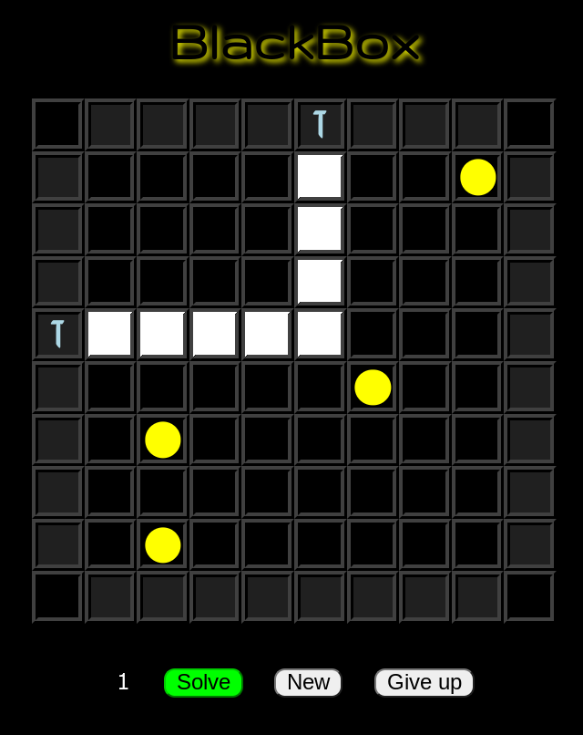

Inside the box are 4 mysterious objects - your job is to figure out where they are!
You'll do this by sending in light rays that will do one of three things:
Bounce off an object (more about this below)
Hit an object directly
Reflect back to you.
Bouncing
When a ray bounces off an object it turns away from that object, for example (the location
of each object in these examples is marked with a yellow ball):

The ray bounces away from an object next to the direction it is going, one square
before it gets even with the object. Notice that it doesn't matter which of the two
marked squares the ray started at, it exits at the other one! Note how matching symbols
mark both the entry square and exit square for the light ray. You send in a light ray by
clicking or tapping on any of the squares around the outside of the black box.
Bounces can keep happening as the light ray travels through the box:
This time the light ray bounced off one object, kept going, then bounced off another! Tricky!
If a light ray hits an object head-on, this is called a hit and is marked at the entry square
by coloring it red:
Hits can also occur after a bounce:
Another thing a light ray can do is reflect:
A reflection happens if the light ray tries to go between two objects with one square between them.
This is because each object tries to bounce the light ray away from it, but in opposite directions.
So the light ray instead reflect back the way it came. This is marked by coloring the entry (which
is also the exit!) square yellow. And just like a hit, a reflection between two objects could occur
after a bounce off another one!
One other type of reflection happens if the light ray can't even get into the box because an object
if on an outer square:
Look at the reflection on the bottom row of the box (marked in yellow) - the object blocks the light
ray from getting in, and so is instead refected. Note that if we send in the light right on the square
directly across from an object this is not a reflection, but a hit:
To send in a light ray just click/tap on one of the outer squares of the box. When you've sent in some
light rays and think you might know where an object is located, just click/tap on the square in the box
to mark it. To unmark such a square if you change your mind, just click/tap it again.
When you have all marked all 4 objects where you think they are, click the Solve button. If you are right,
you win! If not, you have a 3 turn penalty applied and you keep playing. If you just can't figure it out,
you can click the "Give Up" button and you will be shown where the objects were.
If you're having trouble with how the rules work, you can use the "Give up" to trace
the light rays you sent in to see how they hit/reflected/bounced. Then play another game!